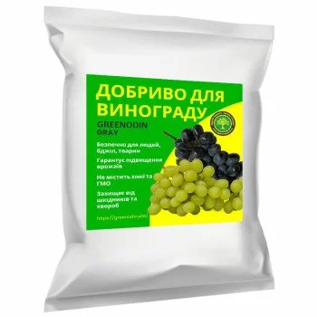
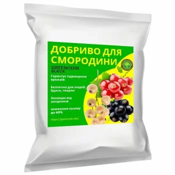
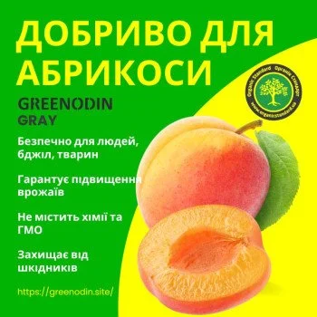
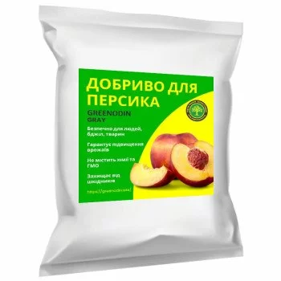
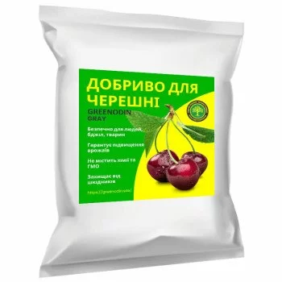
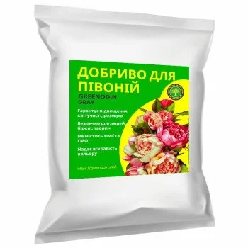
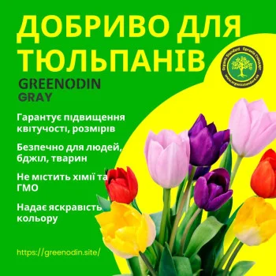
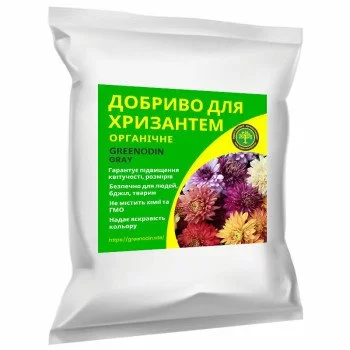
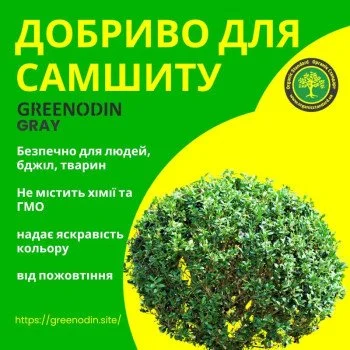

Каталог органічних добрив GREENODIN
Органо-мінеральні гранульовані добрива для полів, саду, городу, квітів і газону: 53 позицій. Оберіть розділ або лінійку, щоб швидко знайти потрібне добриво.
Для полів
Органо-мінеральні гранульовані добрива GREENODIN для зернових, зернобобових і технічних культур. На сторінці кожної культури — рекомендована лінійка, норми внесення та технологічна карта.
Зернові 4
 Добрива для гречкиДобрива для гречки GREENODIN — органо-мінеральні гранульовані добрива для органічного та інтегрованого вирощування гречки.GRAY
Добрива для гречкиДобрива для гречки GREENODIN — органо-мінеральні гранульовані добрива для органічного та інтегрованого вирощування гречки.GRAY Добрива для кукурудзиДобрива для кукурудзи GREENODIN — органо-мінеральні гранульовані добрива для органічного вирощування кукурудзи на зерно.REDGRAYBROWNBLACK
Добрива для кукурудзиДобрива для кукурудзи GREENODIN — органо-мінеральні гранульовані добрива для органічного вирощування кукурудзи на зерно.REDGRAYBROWNBLACK Добрива для пшениціДобрива для пшениці GREENODIN — органо-мінеральні гранульовані добрива для озимої та ярої пшениці в органічному землеробстві.BLACKGRAY
Добрива для пшениціДобрива для пшениці GREENODIN — органо-мінеральні гранульовані добрива для озимої та ярої пшениці в органічному землеробстві.BLACKGRAY Добрива для ячменюДобрива для ячменю GREENODIN — органо-мінеральні гранульовані добрива для підтримання родючості ґрунту та живлення ярого й озимого ячменю.REDGRAYBROWN
Добрива для ячменюДобрива для ячменю GREENODIN — органо-мінеральні гранульовані добрива для підтримання родючості ґрунту та живлення ярого й озимого ячменю.REDGRAYBROWN

Технічні культури 3
 Добрива для конопліДобрива для технічних конопель GREENODIN — органо-мінеральні гранульовані добрива для поліпшення поживного режиму ґрунту.GRAY
Добрива для конопліДобрива для технічних конопель GREENODIN — органо-мінеральні гранульовані добрива для поліпшення поживного режиму ґрунту.GRAY Добрива для соняшникуДобрива для соняшнику GREENODIN — органо-мінеральні гранульовані добрива для вирощування соняшнику з опорою на аналіз ґрунту.BLACKGRAY
Добрива для соняшникуДобрива для соняшнику GREENODIN — органо-мінеральні гранульовані добрива для вирощування соняшнику з опорою на аналіз ґрунту.BLACKGRAY Добрива для цукрових буряківДобрива для цукрових буряків GREENODIN — органо-мінеральні гранульовані добрива для органічного та інтегрованого вирощування цукрового…GRAY
Добрива для цукрових буряківДобрива для цукрових буряків GREENODIN — органо-мінеральні гранульовані добрива для органічного та інтегрованого вирощування цукрового…GRAY
Для саду і городу
Добрива GREENODIN для овочів і баштанних, ягід, винограду та плодових дерев. Кожне добриво підібране під свою культуру й вноситься в гранулах.
Овочі та баштанні 13
 Добриво для баклажанівОрганічне гранульоване добриво GREENODIN GRAY для баклажанів у відкритому ґрунті й теплицях.GRAY
Добриво для баклажанівОрганічне гранульоване добриво GREENODIN GRAY для баклажанів у відкритому ґрунті й теплицях.GRAY Добриво для гострого перцюДобриво GREENODIN GRAY для гострого перцю.GRAY
Добриво для гострого перцюДобриво GREENODIN GRAY для гострого перцю.GRAY Добриво для кавунаОрганічне гранульоване добриво GREENODIN GRAY для кавунів.GRAY
Добриво для кавунаОрганічне гранульоване добриво GREENODIN GRAY для кавунів.GRAY Добриво для капустиГранульоване органічне добриво GREENODIN GRAY для капусти.GRAY
Добриво для капустиГранульоване органічне добриво GREENODIN GRAY для капусти.GRAY Добриво для картопліДобриво GREENODIN GRAY для картоплі: 25 г під кущ або на 1 м² під час садіння, з другого року норму зменшують на 20%.GRAY
Добриво для картопліДобриво GREENODIN GRAY для картоплі: 25 г під кущ або на 1 м² під час садіння, з другого року норму зменшують на 20%.GRAY Добриво для морквиОрганічне добриво GREENODIN GRAY для моркви.GRAY
Добриво для морквиОрганічне добриво GREENODIN GRAY для моркви.GRAY Добриво для огірківДобриво GREENODIN GRAY для огірків у відкритому ґрунті та теплицях.GRAY
Добриво для огірківДобриво GREENODIN GRAY для огірків у відкритому ґрунті та теплицях.GRAY Добриво для перцюОрганічне гранульоване добриво GREENODIN GRAY для солодкого перцю.GRAY
Добриво для перцюОрганічне гранульоване добриво GREENODIN GRAY для солодкого перцю.GRAY Добриво для помідорівКомплексне органічне добриво GREENODIN GRAY для помідорів у відкритому ґрунті й теплицях.GRAY
Добриво для помідорівКомплексне органічне добриво GREENODIN GRAY для помідорів у відкритому ґрунті й теплицях.GRAY Добриво для редисуОрганічне гранульоване добриво GREENODIN GRAY для редису.GRAY
Добриво для редисуОрганічне гранульоване добриво GREENODIN GRAY для редису.GRAY Добриво для столових буряківДобриво GREENODIN GRAY для столових буряків.GRAY
Добриво для столових буряківДобриво GREENODIN GRAY для столових буряків.GRAY Добриво для цибуліОрганічне добриво GREENODIN GRAY для цибулі ріпчастої.GRAY
Добриво для цибуліОрганічне добриво GREENODIN GRAY для цибулі ріпчастої.GRAY Добриво для часникуДобриво GREENODIN GRAY для озимого та ярого часнику.GRAY
Добриво для часникуДобриво GREENODIN GRAY для озимого та ярого часнику.GRAY
Ягоди та виноград 5

Добриво для виноградуДобриво GREENODIN GRAY для винограду: 25 г на 1 м² (250 кг/га) по площі або під кущ, з щорічним зниженням норми на 20%.GRAY Добриво для лохиниОрганічне добриво GREENODIN BROWN для лохини.BROWN
Добриво для лохиниОрганічне добриво GREENODIN BROWN для лохини.BROWN Добриво для малиниДобриво GREENODIN BROWN для малини.BROWN
Добриво для малиниДобриво GREENODIN BROWN для малини.BROWN Добриво для полуниціГранульоване органічне добриво GREENODIN BROWN для полуниці.BROWN
Добриво для полуниціГранульоване органічне добриво GREENODIN BROWN для полуниці.BROWN
Добриво для смородиниДобриво GREENODIN BLACK для смородини.BLACK
Плодові дерева 5

Добриво для абрикосаОрганічне добриво GREENODIN GRAY для абрикоса.GRAY Добриво для грушіДобриво GREENODIN BROWN для груші: при посадці — 25 г на 1 л ґрунту, для дерев, що ростуть, — від 50 г під рослину залежно від висоти.BROWN
Добриво для грушіДобриво GREENODIN BROWN для груші: при посадці — 25 г на 1 л ґрунту, для дерев, що ростуть, — від 50 г під рослину залежно від висоти.BROWN
Добриво для персикаГранульоване органічне добриво GREENODIN GRAY для персика.GRAY
Добриво для черешніОрганічне добриво GREENODIN GRAY для черешні.GRAY Добриво для яблуніДобриво GREENODIN BROWN для яблуні: при посадці саджанця — 25 г на 1 л ґрунту, далі — під дерево залежно від його висоти.BROWN
Добриво для яблуніДобриво GREENODIN BROWN для яблуні: при посадці саджанця — 25 г на 1 л ґрунту, далі — під дерево залежно від його висоти.BROWN
Для дому та декору
Добрива для садових і кімнатних квітів, хвойних, самшиту та газону. Для кімнатних рослин гранули змішують із субстратом, у саду — вносять по площі або під рослину.
Квіти 10
 Добриво для азаліїОрганічне добриво GREENODIN BROWN для азалії.BROWN
Добриво для азаліїОрганічне добриво GREENODIN BROWN для азалії.BROWN Добриво для бугенвіліїДобриво GREENODIN BROWN для бугенвілії: 25 г на 1 л субстрату для підкислення ґрунтосуміші.BROWN
Добриво для бугенвіліїДобриво GREENODIN BROWN для бугенвілії: 25 г на 1 л субстрату для підкислення ґрунтосуміші.BROWN Добриво для гортензійОрганічне добриво GREENODIN BROWN для гортензій.BROWN
Добриво для гортензійОрганічне добриво GREENODIN BROWN для гортензій.BROWN Добриво для орхідейДобриво GREENODIN BROWN для орхідей: 25 г на 1 л субстрату під час пересаджування.BROWN
Добриво для орхідейДобриво GREENODIN BROWN для орхідей: 25 г на 1 л субстрату під час пересаджування.BROWN
Добриво для півонійОрганічне добриво GREENODIN GRAY для півоній.GRAY Добриво для спатифілумаДобриво GREENODIN BROWN для спатифілума: 25–30 г на 1 л субстрату під час посадки або пересаджування.BROWN
Добриво для спатифілумаДобриво GREENODIN BROWN для спатифілума: 25–30 г на 1 л субстрату під час посадки або пересаджування.BROWN Добриво для трояндОрганічне добриво GREENODIN BROWN для садових і кімнатних троянд.BROWNBLACKGRAYRED
Добриво для трояндОрганічне добриво GREENODIN BROWN для садових і кімнатних троянд.BROWNBLACKGRAYRED
Добриво для тюльпанівДобриво GREENODIN GRAY для тюльпанів.GRAY Добриво для фіалокОрганічне добриво GREENODIN BROWN для фіалок: 25–30 г на 1 л субстрату під час посадки чи пересаджування.BROWN
Добриво для фіалокОрганічне добриво GREENODIN BROWN для фіалок: 25–30 г на 1 л субстрату під час посадки чи пересаджування.BROWN
Добриво для хризантемДобриво GREENODIN GRAY для садових хризантем.GRAY
Хвойні, чагарники та газон 3
 Добриво для газонуГранульоване органічне добриво GREENODIN GRAY для газону: 25 г на 1 м² (2,5 кг на сотку) двічі на рік.GRAYBLACKBROWN
Добриво для газонуГранульоване органічне добриво GREENODIN GRAY для газону: 25 г на 1 м² (2,5 кг на сотку) двічі на рік.GRAYBLACKBROWN
Добриво для самшитуДобриво GREENODIN GRAY для самшиту та живоплотів із нього.GRAY Добриво для хвойнихОрганічне добриво GREENODIN BROWN для хвойних, зокрема туї.BROWN
Добриво для хвойнихОрганічне добриво GREENODIN BROWN для хвойних, зокрема туї.BROWN
Лінійка
Базові добрива GREENODIN для господарств і великих площ: меліоранти та рекультиванти для ґрунтів з різною кислотністю, вмістом органіки й вологи. Лінійку обирають за аналізом ґрунту.
Лінійка GREENODIN 8
 Добриво GREENODIN WhiteGREENODIN WHITE — меліорант на основі силікату калію, трепелу, діатоміту та леонардиту з високою вологоутримувальною здатністю.WHITE
Добриво GREENODIN WhiteGREENODIN WHITE — меліорант на основі силікату калію, трепелу, діатоміту та леонардиту з високою вологоутримувальною здатністю.WHITE Добриво GREENODIN GrayGREENODIN GRAY — рекультивант на основі леонардиту та кремнієвмісних мінералів із середнім вмістом органіки.GRAY
Добриво GREENODIN GrayGREENODIN GRAY — рекультивант на основі леонардиту та кремнієвмісних мінералів із середнім вмістом органіки.GRAY Добриво GREENODIN BrownGREENODIN BROWN — меліорант на основі леонардиту, діатоміту та торфу для підкислення лужних і нейтральних ґрунтів.BROWN
Добриво GREENODIN BrownGREENODIN BROWN — меліорант на основі леонардиту, діатоміту та торфу для підкислення лужних і нейтральних ґрунтів.BROWN Добриво GREENODIN BlackGREENODIN BLACK — меліорант на основі леонардиту та діатоміту для деградованих, збіднених і забруднених ґрунтів, зокрема в посушливих…BLACK
Добриво GREENODIN BlackGREENODIN BLACK — меліорант на основі леонардиту та діатоміту для деградованих, збіднених і забруднених ґрунтів, зокрема в посушливих…BLACK Добриво GREENODIN RedGREENODIN RED — меліорант на основі бурого бентоніту, лігніту та кремнієвмісних мінералів для підвищення родючості кислих збіднених ґрунтів.RED
Добриво GREENODIN RedGREENODIN RED — меліорант на основі бурого бентоніту, лігніту та кремнієвмісних мінералів для підвищення родючості кислих збіднених ґрунтів.RED Добриво GREENODIN MeliorGREENODIN MELIOR — меліорант на основі природного карбонату кальцію та кремнеземів для розкислення кислих і збіднених ґрунтів та…MELIOR
Добриво GREENODIN MeliorGREENODIN MELIOR — меліорант на основі природного карбонату кальцію та кремнеземів для розкислення кислих і збіднених ґрунтів та…MELIOR Добриво GREENODIN MultihumateGREENODIN MULTIHUMATE — меліорант на основі лігніту та діатоміту, збагачений корисними бактеріями.MULTIHUMATE
Добриво GREENODIN MultihumateGREENODIN MULTIHUMATE — меліорант на основі лігніту та діатоміту, збагачений корисними бактеріями.MULTIHUMATE Добриво GREENODIN MicroboxGREENODIN MICROBOX — ґрунтовий субстрат на основі торфу, леонардиту та діатоміту з корисними мікроорганізмами.MICROBOX
Добриво GREENODIN MicroboxGREENODIN MICROBOX — ґрунтовий субстрат на основі торфу, леонардиту та діатоміту з корисними мікроорганізмами.MICROBOX